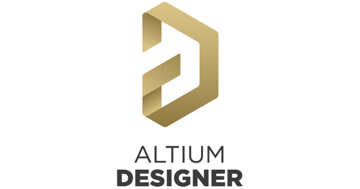
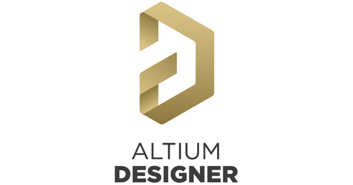
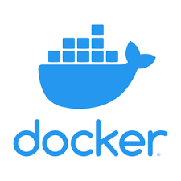
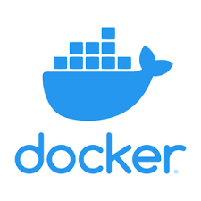

I'm currently pursuing a Master's degree in Electrical Engineering at the University of Florida, set to graduate in December 2024. I pride myself on being a dynamic engineer with a versatile skill set, capable of tackling diverse challenges across various projects.
My experiences, spanning internships, research, coursework, and personal projects, have honed my skills in both hardware and software domains. On the hardware side, I possess working knowledge of VLSI, coupled with hands-on experience in analog circuit design and PCB layout & routing. In software, I am highly proficient in Python, leveraging it to develop various programs and scripts. I have expertise in utilizing common libraries such as NumPy, Pandas, and Matplotlib to analyze data and visualize results effectively.
Additionally, I have a strong background in embedded programming using C/C++, with practical experience on platforms like Raspberry Pi, STM32, MSP40, and ESP32/8266. My solid understanding of communication protocols complements this skill set. Moreover, I am adept in pivotal microservices tools like Docker and Kubernetes, as well as the Amazon Web Services Platform.
 


 



University of Florida - MS Electrical Engineering, December 2024
University of Florida - BS Electrical Engineering, May 2022
UF Wireless and Mobile Systems Lab
Gainesville, FL
Graduate Research Assistant, IoT Acres Project
January 2023 – Present
Led the development of an IoT system for construction site sensor data transmission, achieving a 75% reduction in device overhead. Conducted testing and optimized network infrastructure for enhanced reliability. Utilized cloud services for data accessibility and visualization.
Ethicon Endo-Surgery
Cincinnati, OH
Research and Development Co-op
September 2022 – December 2022
Collaborated on developing a test fixture for medical device component tracking. Engineered firmware for sensor communication and conducted comprehensive data analysis. Supported teams with real-time data visualization.
F5 Networks
Seattle, WA
Software Engineering Intern
June 2022 – September 2022
Orchestrated Docker-based data pipeline for Digital Twin initiative, ensuring smooth sensor data transmission. Packaged and deployed pipeline on cloud platform. Enhanced network monitoring and security. Demonstrated proficiency in Git for version control.
For more details, please refer to my resume
Dynamic Cluster Management in Kubernetes Ecosystem
Orchestrated a resilient 3-node Kubernetes cluster using kubeadm, kubectl, and kubelet in a CloudLab Linux virtual environment. Monitored system metrics, scripted CPU utilization tracking with Kubernetes Python SDK and Metrics Server. Engineered first-order linear models with local and global PI controllers for optimizing pod allocation, targeting 80% CPU utilization. Designed Flask REST APIs for dynamic node management, handling job assignment, cordon/restore node tasks, and system state retrieval.
SRAM Design
Utilized Cadence Virtuoso in my VLSI class project to meticulously design the layout of an SRAM (Static Random-Access Memory). Focused on optimizing key components including the cell array, wordlines, bitlines, sense amplifiers, and access transistors. Orchestrated critical elements within the layout to ensure efficient data storage, retrieval, and manipulation. Aimed to enhance functionality while minimizing area occupation by intricately arranging these components. Explored the nuances of SRAM design principles and their interplay in VLSI circuits.
UF Hydro Patrol Project
Enabled miniaturization by using given specifications to layout and route custom PCBs for a research project. Reduced interference and improved signal integrity by incorporating MOSFET switches to isolate sensor probe signals. Performed continuity testing and assembled the PCB using surface mount soldering techniques.
AWS Serverless BMI Calculator
Deployed a serverless web application on AWS, leveraging S3 for storage and Route 53 for domain management. Leveraged AWS Lambda for serverless JavaScript, enabling real-time BMI calculations with API Gateway for function triggering. Implemented IAM policies to fortify application security by precisely defining access permissions within the AWS environment.